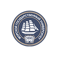
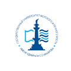

Участники
Технологические компании
- Ситроникс КТ
- НПП Авиационная
и Морская Электроника - Космическая связь
- НИИ Специальных проектов
- СКАНЭКС
- НИИ Нептун
- Транзас Консалтинг
- ЦНИИ Курс
- Orange Business Services
- Онежский судостроительно- судоремонтный завод
Судоходные компании

Классификационные общества
Университеты
- МГУ им. адмирала Г.И. Невельского 
- Санкт-Петербургский Политехнический Университет Петра Великого
- ГУМРФ имени адмирала С.О. Макарова 